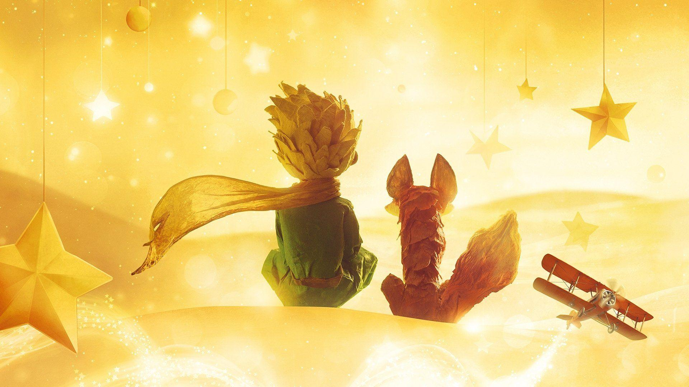

<!DOCTYPE html>
<html>
<title>
    The Little Prince
</title>
</html>
<head>
    <meta name="viewport" content="width=device-width, initial-scale=1.0">
    <!-- setting the viewport -->
<body>
<style>
    body {background-color: beige;}
    h1   {color: lightcoral;}
    p    {color: maroon;
          border: 1px solid brown}
    address {color:lightsalmon}
    blockquote {color:brown} 
</style>
    <h1 style="text-align:center" ;>
        The Little Prince
    </h1>
    <p style="text-align:right" ;>
        <em>Antoine de Saint-Exupéry</em>
    </p>
    
    <!-- responsive images -->
    <p>
       <abbr title="The Little Princ"> The Little Prince</abbr> (French: <i>Le Petit Prince, pronounced [lə p(ə)ti
        pʁɛ̃s]</i>) is a novella by Frencharistocrat, writer, and military aviator <sup>Antoine de Saint-Exupéry</sup>. It was first
        published in English and Frenchin the United States by Reynal & Hitchcock in <strong> April 1943 </strong> and was published in
        <del>France</del> following liberation; Saint-Exupéry's works had been banned by the Vichy Regime. <b>The story follows a young
        prince who visitsvarious planets in space, including Earth, and addresses themes of loneliness, friendship,
        love, and loss.</b><br>
        Despite its style as a children's book, <mark>Little Prince</mark> makes observations about life, adults and
        human nature.<br>
        The Little Prince became Saint-Exupéry's most successful work, selling an estimated 140 million copies
        worldwide, which makes it one of the best-selling and most translated books ever published. <i>It has been
        translated into over 301 languages and dialects.The Little Prince has been adapted to numerous art forms and
        media, including audio recordings, radio plays, live stage, film, television, ballet, and opera.</i><br>
        The story of The Little Prince is recalled in a sombre, measured tone by the pilot-narrator, in memory of his
        small friend, a memorial to the prince—not just to the prince, but also to the time the prince and the narrator
        had together.<br>
        <cite>Little Prince</cite> was created when Saint-Exupéry was "an ex-patriate and distraught about what was going on in
        his country and in the world."<br>
         According to one analysis
        <blockquote cite="https://en.wikipedia.org/wiki/The_Little_Prince">
        <q>The story of the Little Prince features a lot of fantastical, unrealistic elements....
            You can't ride a flock of birds to another planet... The fantasy of the Little Prince works
            because the logic of the story is based on the imagination of children, rather than the strict realism of
            adults.
        </q>
        </blockquote>
    </p>
    <address>
        Author: Antoine de Saint-Exupéry<br>
        Original title: Le Petit Prince<br>
        Publisher: <br>
        Reynal & Hitchcock (U.S.<br>
        Gallimard (France)<br>
    </address>
</body>
</head>